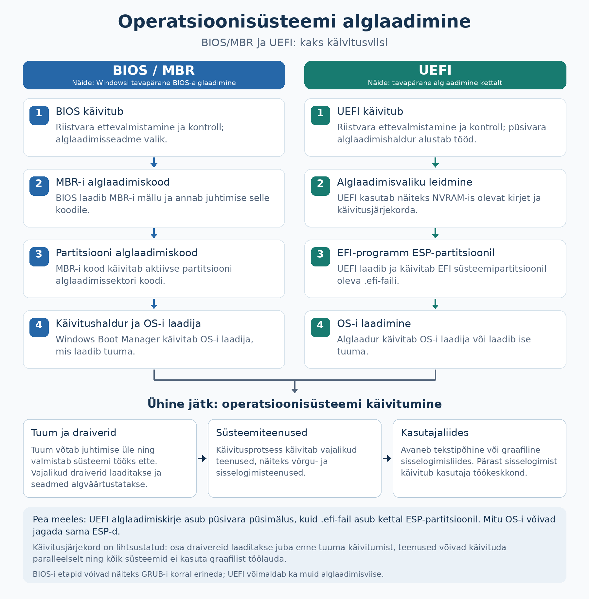

Alglaadimine ja operatsioonisüsteemi hooldus¶
Toitenupu vajutamise ja kasutajale töölaua ilmumise vahel toimub mitu erinevat tegevust. Käivitamiseks vajalik tarkvara ei koosne ainult operatsioonisüsteemist. Selles materjalis vaatame arvuti alglaadimist ning põhimõtteid, mille abil süsteemi töökorras ja ajakohasena hoida.
Õpieesmärgid
Pärast materjali läbimist oskad:
- selgitada püsivara, UEFI, BIOS-i ja alglaaduri rolli;
- kirjeldada arvuti alglaadimise põhietappe;
- eristada Secure Booti, TPM-i ja kettakrüpteerimist;
- selgitada draiverite ja teenuste osa süsteemi käivitumisel;
- selgitada tarkvarapaketi, paketihalduri ja paketihoidla rolli;
- põhjendada uuenduste ja tootetoe tähtsust;
- eristada varukoopiat, hetktõmmist ja taastamisvõimalust;
- kirjeldada lihtsa tõrkeotsingu põhimõtet ning virtuaalmasina rolli õppimisel.
1. Mis käivitub enne operatsioonisüsteemi?¶
Püsivara ehk firmware on seadme tööks vajalik tarkvara, mida hoitakse tavaliselt seadme püsimälus. Näiteks arvuti emaplaadi püsivara aitab riistvara käivitada ja valmistab ette OS-i laadimise.
Püsivara ei ole sama mis muutmälu ehk RAM. Püsivaraprogramm säilib ka siis, kui arvuti ei saa toidet. Vajaduse korral saab seda tootja ettenähtud viisil uuendada.
UEFI (Unified Extensible Firmware Interface) määratleb tänapäevase liidese arvuti püsivara ja operatsioonisüsteemi vahel. Igapäevases kõnes nimetatakse „UEFI-ks“ ka sellel põhinevat püsivara ja seadistusmenüüd.
BIOS (Basic Input/Output System) tähistab varasemat PC püsivara lahendust. UEFI on selle tänapäevane asendaja. Seadistusmenüüd nimetatakse kõnekeeles mõnikord BIOS-iks ka UEFI-ga arvutil.
| Mõiste | Peamine roll |
|---|---|
| Püsivara | Seadme käivitamine ja algne juhtimine. |
| UEFI või BIOS | Arvuti käivitamise ettevalmistamine ja alglaadimise käivitamine. |
| Alglaadur | OS-i tuuma laadimise ja käivitamise korraldamine. |
| OS-i tuum | Ressursside ja kaitstud toimingute haldamine pärast selle käivitumist. |
Kui OS juba töötab, korraldavad tavalist seadmete kasutamist eelkõige OS-i komponendid ja draiverid.
2. Alglaadimise põhietapid¶
Alglaadimine ehk boot on tegevuste jada, mille käigus süsteem valmistatakse tööks ette ja operatsioonisüsteem käivitatakse.
Tavalise UEFI-ga arvuti käivitumist saab lihtsustada järgmiselt:
- Käivitub püsivara. See valmistab vajalikud riistvarakomponendid ette ja teeb käivituskontrolle. Nende kontrollide kohta kasutatakse ka nimetust POST (power-on self-test).
- Valitakse alglaadimisvõimalus. Püsivara seadistused määravad näiteks, millist alglaadimiskirjet kasutada. Käivitada saab eri lahendustes salvestusseadmelt, paigaldusmeedialt või võrgust.
- Käivitatakse alglaadimisprogramm. See võib olla näiteks Windows Boot Manager või GRUB. Alglaadimisahelas võib olla rohkem kui üks programm.
- Laaditakse ja käivitatakse OS-i tuum. Vajalik tuumakood jõuab RAM-i ning alustab süsteemi töö korraldamist.
- Käivitatakse vajalikud draiverid ja teenused. Süsteem valmistab ette näiteks failide, võrgu ja kasutajate haldamise.
- Kasutaja saab süsteemi kasutada. Tööjaamas ilmub tavaliselt sisselogimisvaade või töölaud. Server võib olla kasutatav käsurea või võrgu kaudu ilma graafilise töölauata.

Skeem on lihtsustatud. Mõned draiverid laaditakse väga varakult ja mitu teenust võivad käivituda paralleelselt. Erinevad OS-id ning käivitamisviisid kasutavad erinevaid üksikasju. Näiteks unerežiimist naasmine ei ole sama tegevus mis täielik alglaadimine.
3. GPT, MBR ja EFI süsteemipartitsioon¶
Arvuti peab teadma, kuidas salvestusseade on jaotatud ning kust leida käivitamiseks vajalik tarkvara.
GPT (GUID Partition Table) ja MBR (Master Boot Record) on erinevad viisid salvestusseadme partitsioonide kirjeldamiseks. Need ei ole failisüsteemid. NTFS ja ext4 kirjeldavad failide korraldamist; GPT ja MBR partitsioonide jaotust.
UEFI-käivitusega tänapäevases Windowsi süsteemis kasutatakse GPT-d. Vanema BIOS-põhise käivituse puhul on levinud MBR. Need on tavapärased seosed, mitte kõigi seadmete ja OS-ide kohta kehtiv universaalne reegel.
UEFI-süsteemi salvestusseadmel võib olla EFI süsteemipartitsioon ehk ESP (EFI System Partition). Seal asuvad alglaadimisfailid, mille kaudu OS-i käivitamine algab. See partitsioon kasutab tavaliselt FAT32 failisüsteemi ning on eraldi OS-i põhilistest andmetest.
Käivitamisfailid
Süsteemipartitsiooni sisu muutmine või kustutamine võib muuta arvuti mittekäivitatavaks, kuigi kasutaja failid on teisel partitsioonil alles. Samuti võib käivitusrežiimi muutmine muuta olemasoleva paigalduse käivitamise võimatuks. Muudatuse eesmärk ja tagajärjed peavad olema enne teada.
Lisalugemine: vanem BIOS-põhine käivitus
Klassikalise BIOS- ja MBR-põhise käivituse korral laadib BIOS käivitusseadme algusest käivituskoodi. See suunab töö edasi järgmisele alglaadimiskomponendile, näiteks partitsiooni käivituskoodile või alglaaduri järgmisele osale.
Seda mudelit kasutatakse vanemate süsteemide mõistmiseks. UEFI puhul ei pea käivitusahel järgima sama sektoripõhist teed: püsivara saab käivitada EFI-programmi.
4. Secure Boot, TPM ja kettakrüpteerimine¶
Need kolm mõistet kuuluvad turvalisuse juurde, kuid neil on erinevad ülesanded.
| Mõiste | Mida see teeb? | Millega ei tohi segi ajada? |
|---|---|---|
| Secure Boot | Kontrollib alglaadimisel käivitatava tarkvara lubatavust digitaalallkirjade ja usaldusreeglite abil. | Ei krüpteeri kasutaja dokumente. |
| TPM | Turvakomponent, mis aitab kaitsta võtmeid ja toetab süsteemi turvatoiminguid. | Ei ole tavalise viirusetõrje asendaja ega iseseisev täielik krüpteerimislahendus. |
| Kettakrüpteerimine | Muudab salvestatud andmete lugemise ilma vajalike võtmeteta raskeks. | Ei tõenda, et kõik käivituvad programmid on usaldusväärsed. |
Secure Boot on UEFI-põhine turvafunktsioon. Selle eesmärk on takistada keelatud või ebausaldusväärse alglaadimistarkvara käivitamist. See ei tähenda, et süsteemis saavad töötada ainult ühe tootja operatsioonisüsteemid: toetatud Linuxi alglaadimislahendused saavad samuti Secure Booti kasutada.
TPM tähendab Trusted Platform Module. TPM võib olla eraldi kiip või muu vastav turvalahendus. Näiteks saab kettakrüpteerimise lahendus seda võtmete kaitsmisel kasutada. TPM-i olemasolu ei tähenda automaatselt, et ketas on krüpteeritud.
Kettakrüpteerimise näited on Windowsi BitLocker, macOS-i FileVault ja Linuxis LUKS-põhised lahendused. Kui kasutaja on süsteemi sisse loginud ja andmed on talle ligipääsetavad, saavad vastavate õigustega rakendused neid tavaliselt kasutada. Seega ei asenda krüpteerimine rakenduste usaldusväärsuse kontrolli ega varukoopiat.
Näide: kaotatud sülearvuti
Kettakrüpteerimine aitab kaitsta salvestatud andmeid olukorras, kus võõras inimene saab seadme või selle ketta enda kätte. Secure Boot aitab kaitsta käivitusahelat. Need lahendused toetavad eri eesmärke ja neid saab kasutada koos.
Windows 11 kui süsteeminõuete näide¶
Windows 11 ametlike nõuete hulka kuuluvad muu hulgas sobiv protsessor, UEFI, Secure Booti võimekus ja TPM 2.0. Secure Booti võimekus ja selle parajasti sisselülitatud olek on erinevad asjad. Kõik nõuded tuleb vaadata ametlikust loetelust; ainult RAM-i ja vaba kettaruumi kontrollimisest ei piisa.
Miinimumnõuetele vastamine tähendab sobivust süsteemi nõuete järgi. See ei tõenda, et kõik kasutaja rakendused töötavad soovitud kiirusega.
5. Draiverid ja teenused käivitumisel¶
Tuuma käivitumisest üksi ei piisa kõigi kasutaja tegevuste jaoks. Vaja on ka seadmete kasutamist ja taustal töötavaid teenuseid.
- Draiver võimaldab OS-il seadmega suhelda. Puuduv või sobimatu draiver võib põhjustada näiteks heli, võrgu või graafika probleeme.
- Teenus teeb taustal süsteemi või rakenduse jaoks vajalikku tööd. Näiteks võrguühenduste haldus ja printimine võivad sõltuda teenustest.
- Kasutajaliides pakub süsteemi juhtimiseks sobiva vaate. Graafiline töölaud on üks võimalik liides.
Näide: server töötab ilma töölauata
Veebiserver saab käivitada OS-i ja veebiteenuse ilma graafilise töölauata. Teenust kasutav inimene näeb oma brauseris veebilehte, mitte serveri kohalikku ekraani. Graafilise töölaua puudumine ei tähenda, et serveri OS ei tööta.
Kui graafiline töölaud ei käivitu, võib osa süsteemist endiselt töötada. Tõrge võib olla näiteks graafikadraiveris või kasutajaliidese teenuses. Põhjus tuleb välja selgitada, mitte järeldada automaatselt, et kogu OS on rikutud.
6. Tarkvara paigaldamine ja paketihaldus¶
Tarkvarapakett sisaldab tarkvara paigaldamiseks vajalikku sisu ja selle kohta käivat teavet. Pakett võib sisaldada programmi, teeki, draiverit või muud komponenti. Üks rakendus võib koosneda mitmest paketist.
Sõltuvus on teine komponent, mida tarkvara oma tööks vajab. Paketihaldur aitab pakette paigaldada, uuendada ja eemaldada ning võib korraldada ka sõltuvuste leidmist.
| Keskkond | Näiteid tarkvara haldamisest |
|---|---|
| Debian ja Ubuntu | APT ning süsteemi paketihoidlad. |
| Windows | Paigaldusprogrammid, Microsoft Store ja WinGet. |
| macOS | App Store ja tootja pakutavad paigalduslahendused. |
Paketihoidla ehk repository on tarkvarapakettide ja nende teabe allikas. Paketihalduri kasutamine ei muuda suvalist hoidlat automaatselt usaldusväärseks: tähtis on ka see, kust tarkvara pärineb.
Usaldusväärne paigaldusallikas
Tarkvara puhul tuleb kontrollida allikat, sobivat OS-i, protsessori arhitektuuri ja litsentsitingimusi. Veebilehel suurena nähtav „Laadi alla“ nupp võib olla reklaam, mitte soovitud programmi ametlik allikas.
7. Uuendused ja tootetugi¶
Operatsioonisüsteemi, rakenduste ja püsivara uuendused võivad parandada turvavigu, töökindlust, seadmete tuge või funktsioone.
| Uuenduse liik | Peamine eesmärk |
|---|---|
| Turvauuendus | Parandada nõrkusi, mida võidakse ründamiseks kasutada. |
| Veaparandus | Parandada näiteks kokkujooksmist või valesti töötavat funktsiooni. |
| Funktsiooni- või versiooniuuendus | Lisada võimalusi või viia süsteem järgmisele versioonile. |
| Draiveri või püsivara uuendus | Parandada seadme tuge, turvalisust või töökindlust. |
Tootetugi kirjeldab muu hulgas seda, kui kaua tootja või projekt süsteemile parandusi pakub. LTS (long-term support) tähendab pikema toega väljaannet, kuid toe kestus ja ulatus sõltuvad konkreetsest tootest. LTS ei tähenda piiramatut tuge.
Näide: Windows 10 toe lõpp
Windows 10 Home'i ja Pro tavapärane tugi lõppes 14.10.2025. Arvuti ei lõpetanud selle tõttu automaatselt töötamist. Muutus uuenduste ja toe kättesaadavus. ESU on eraldi turvauuenduste programm, mille tingimusi tuleb kontrollida. Mõne eriväljaande tugiaeg võib erineda.
Õppimisel on oluline eristada kahte väidet: „süsteem käivitub“ ja „süsteem saab vajalikku turvatuge“.
Uuendamise kavandamisel arvestatakse vajalike rakenduste sobivust, vaba salvestusruumi, varukoopia olemasolu ja võimalikku taaskäivitamist. Suurema muudatuse mõju saab esmalt katsetada eraldi keskkonnas.
8. Varukoopia, hetktõmmis ja taastamine¶
Varukoopia on andmete või süsteemi koopia, mille abil saab neid taastada. Kasulik varukoopia peab olema taastatav ning kaitstud ka nende rikete eest, mis võivad algset süsteemi kahjustada. Seepärast ei piisa üksnes samale kettale teise kausta kopeerimisest.
Hetktõmmis ehk snapshot salvestab süsteemi või andmete seisundi kindlal hetkel. Selle teostus sõltub lahendusest. Näiteks VMware virtuaalmasina hetktõmmis sõltub alusketastest ja ei asenda sõltumatut varukoopiat. [9]
Taastamisvõimalus võib parandada käivitust, taastada mõne süsteemiseadistuse või viia süsteemi varasemasse seisundisse. See ei tähenda tingimata kõigi kasutaja failide varundamist.
| Lahendus | Milleks see sobib? | Mida kontrollida? |
|---|---|---|
| Failide varukoopia | Dokumentide ja muude andmete taastamiseks. | Kas vajalikud failid on kaasatud ja taastamine toimib? |
| Süsteemi varukoopia | Terve süsteemi taastamiseks sobiva varunduslahenduse abil. | Kas taastamisvahendid ja vajalikud võtmed on olemas? |
| Hetktõmmis | Muudatuse lühiajaliseks katsetamiseks ja tagasipööramiseks. | Millest tõmmis sõltub ja milliseid andmeid see hõlmab? |
| Failide sünkroonimine | Failide hoidmiseks mitmes kohas kooskõlas. | Kas kustutamine levib teistesse kohtadesse ja kas on olemas versiooniajalugu? |
Sünkroonimine ei taga taastamist
Kui kustutus või vigane muudatus levib sünkroonimise kaudu teistesse seadmetesse, ei pruugi nendes olla enam vana tervet faili. Taastamisvõimalus sõltub teenuse versiooniajaloost, säilitamisajast ja muudest seadistustest.
9. Tõrkeotsingu põhimõte¶
Tõrkeotsing algab probleemi täpsest kirjeldusest. Teade „arvuti ei tööta“ võib tähendada toite puudumist, käivitustõrget, sisselogimisprobleemi või ühe rakenduse viga.
| Tähelepanek | Võimalik uurimissuund |
|---|---|
| Arvuti ei reageeri toitenupule. | Toide, ühendused ja riistvara. |
| Püsivara ei leia käivitatavat süsteemi. | Käivitusvalik, salvestusseadme tuvastamine ja alglaadimisfailid. |
| Tuum käivitub, kuid töölaud ei ilmu. | Draiverid, kasutajaliides ja vajalikud teenused. |
| Üks rakendus ei käivitu. | Rakenduse sobivus, sõltuvused, õigused ja logid. |
| Internet ei tööta. | Võrguühendus, aadressiseaded, nimelahendus või kaugteenus. |
Need on uurimissuunad, mitte tõestatud põhjused. Näiteks võrguühenduse puudumine ei tõenda automaatselt, et võrguadapteri draiver on vigane.
Tõrke uurimisel on kasulik teada:
- mis täpselt ebaõnnestub ja kas probleem kordub;
- milline OS, väljaanne ja versioon on kasutusel;
- millal probleem algas ning mis enne seda muutus;
- milline on veateade ja mida näitavad asjakohased logid;
- kas probleem puudutab üht rakendust, üht kasutajat või tervet süsteemi.
Ühe muudatuse tegemine korraga aitab hinnata selle mõju. Enne parandamist tuleb arvestada andmete säilimisega. OS-i uuesti paigaldamine ei ole iga probleemi esimene lahendus.
10. Virtuaalmasin kui õppekeskkond¶
Virtuaalmasin ehk VM (virtual machine) on tarkvaraliselt loodud arvutikeskkond, millele antakse virtuaalne riistvara. Selles saab töötada oma operatsioonisüsteem.
Host on füüsiline arvuti või keskkond, mille ressursse kasutatakse. Külalisoperatsioonisüsteem ehk guest OS töötab virtuaalmasinas. Hüperviisor korraldab virtuaalmasinate töö ja nende ligipääsu hosti ressurssidele.
Virtuaalmasinale määratakse näiteks virtuaalsed protsessorid, RAM, virtuaalketas ja võrguadapter. Need kasutavad hosti tegelikke ressursse. Kui korraga töötab liiga palju VM-e, võib hosti ressurssidest puudu jääda.
Näide: kooli virtuaallabor
Sama VMware vSphere'i keskkond võib käitada ühele õppijale Windowsi virtuaalmasinat ja teisele Linuxi virtuaalmasinat. Mõlemal on oma külalis-OS, virtuaalketas ning seadistused. Seetõttu saab OS-e õppida ilma füüsilise õppearvuti põhiseadistust iga kord vahetamata.
Virtuaalmasin on tervikliku külalis-OS-iga keskkond. Konteiner on teistsugune eraldamise viis: tavaliselt kasutavad konteinerid neid käitava süsteemi sama tuuma. Näiteks tööjaama konteinerilahendus võib ise kasutada taustal virtuaalmasinat. Neid mõisteid käsitleme edasistes teemades täpsemalt.
11. Enesekontroll¶
Vasta kõigepealt ise. Seejärel ava vastus ja võrdle oma põhjendust.
1. Mis tarkvara saab töötada enne, kui SSD-l asuv operatsioonisüsteem on käivitatud?¶
Vaata vastust
Arvuti püsivara. See valmistab riistvara ette ja korraldab alglaadimise alustamist. Püsivara säilib seadme püsimälus ega sõltu SSD-l oleva OS-i käivitumisest.
2. Kas GPT ja NTFS kirjeldavad sama asja?¶
Vaata vastust
Ei. GPT kirjeldab salvestusseadme partitsioonide jaotust. NTFS on failisüsteem, mis korraldab failide ja nende metaandmete hoidmist salvestusruumis.
3. Kas Secure Boot krüpteerib sülearvuti dokumendid?¶
Vaata vastust
Ei. Secure Boot kontrollib alglaadimisel käivitatavat tarkvara. Dokumentide kaitsmiseks salvestusseadmel kasutatakse kettakrüpteerimist või muud vastavat krüpteerimislahendust.
4. Kas TPM-i olemasolu tõendab, et ketas on krüpteeritud?¶
Vaata vastust
Ei. TPM saab toetada võtmete kaitsmist, kuid kettakrüpteerimise olemasolu ja olekut tuleb eraldi kontrollida.
5. Serveril ei ilmu graafilist töölauda, kuid veebiteenus vastab. Kas OS võib korralikult töötada?¶
Vaata vastust
Jah. Serveri OS ja teenused saavad töötada ilma kohaliku graafilise töölauata. Süsteemi kasutatavus sõltub sellest, millist liidest ja teenust on vaja.
6. Kas tarkvara tootetoe lõpp tähendab, et arvuti järgmisel päeval enam ei käivitu?¶
Vaata vastust
Üldjuhul ei. Süsteem võib edasi töötada, kuid vajalikud uuendused ja tugi võivad lõppeda. Seetõttu tuleb hinnata turvatuge ning kavandada sobiv uuendamine või muu lahendus.
7. Miks ei piisa VM-i hetktõmmisest alati varukoopiana?¶
Vaata vastust
Hetktõmmis võib sõltuda samadest alusfailidest ja salvestusseadmest nagu VM. Nende kahjustumine võib muuta ka hetktõmmise kasutuks. Sõltumatu varukoopia peab võimaldama vajalikud andmed taastada ka sellise rikke korral.
8. Miks on tõrkeotsingul vaja täpset veateadet ja OS-i versiooni?¶
Vaata vastust
Need aitavad eristada probleemi põhjuseid ja leida sobiva lahenduse. Sama üldine sümptom võib eri versioonides ning eri käivitusetappides tuleneda erinevatest põhjustest.
9. Kas Debianiga VM muudab kogu VMware hosti operatsioonisüsteemiks Debiani?¶
Vaata vastust
Ei. Debian on selles VM-is külalisoperatsioonisüsteem. Hosti ja hüperviisori keskkond jäävad eraldi ning saavad samal ajal käitada teisi külalis-OS-e.
Kokkuvõte¶
- Arvuti käivitamisel töötab esmalt püsivara. UEFI või BIOS korraldab alglaadimise alustamist; alglaadur aitab käivitada OS-i tuuma.
- Tuuma järel või koos selle käivitumisega valmistatakse ette vajalikud draiverid ja teenused. Graafiline töölaud ei ole kõigi süsteemide kasutamiseks vajalik.
- GPT ja MBR kirjeldavad partitsioonide jaotust, mitte failisüsteemi. EFI süsteemipartitsioonis ehk ESP-s asuvad UEFI-alglaadimiseks vajalikud failid.
- Secure Boot kontrollib alglaadimistarkvara lubatavust. TPM aitab kaitsta võtmeid; kettakrüpteerimine kaitseb salvestatud andmeid. Need täidavad erinevaid ülesandeid.
- Paketihaldur aitab tarkvara paigaldada, uuendada ja eemaldada. Kontrollida tuleb ka tarkvara päritolu ning sõltuvusi.
- Süsteemi töötamine ja turvatoe olemasolu on eri asjad. Uuenduste ning tootetoe kavandamine kuulub OS-i hooldamise juurde.
- Varukoopia peab võimaldama taastamist. Hetktõmmis ja failide sünkroonimine ei asenda automaatselt sõltumatut varukoopiat.
- Tõrkeotsing algab täpsest sümptomist, veateatest ja OS-i versioonist. Üks muudatus korraga aitab hinnata selle mõju.
- Virtuaalmasinas töötab oma külalis-OS; hüperviisor korraldab hosti ressursside kasutamist. Konteiner kasutab tavaliselt seda käitava süsteemi tuuma.
Mõtle õpitule¶
- Milline alglaadimise etapp oli sinu jaoks kõige raskem mõista? Kirjelda käivitusahelat oma sõnadega ja selgita, millal hakkab OS-i tuum töötama.
- Mõtle olukorrale, kus enne uuendust on vaja oma andmeid kaitsta. Mille järgi otsustaksid, kas kasutada varukoopiat, hetktõmmist või mõlemat? Millist taastamisvõimalust peaksid kontrollima?
- Kui arvuti ei jõua töölauani, millised kolm asja uuriksid enne OS-i uuesti paigaldamist? Põhjenda, kuidas kogutud teave aitaks probleemi täpsustada.
Teema sõnastik¶
| Mõiste | Selgitus |
|---|---|
| Püsivara (firmware) | Seadme tööks vajalik tarkvara, mida hoitakse tavaliselt seadme püsimälus. |
| UEFI (Unified Extensible Firmware Interface) | Tänapäevane liides arvuti püsivara ja OS-i vahel; kõnekeeles ka sellel põhinev püsivara ja seadistusmenüü. |
| BIOS (Basic Input/Output System) | Varasem PC püsivara lahendus, mis valmistab riistvara käivitamiseks ette ja alustab alglaadimist. |
| Alglaadimine (boot, booting) | Tegevuste jada, mille käigus süsteem valmistatakse tööks ette ja OS käivitatakse. |
| POST (Power-On Self-Test) | Käivitamisel tehtavad riistvara kontrollid. |
| Alglaadur (bootloader) | Tarkvara, mis korraldab OS-i tuuma laadimise ja käivitamise; võib olla osa pikemast alglaadimisahelast. |
| Tuum (kernel) | OS-i keskne osa, mis haldab muu hulgas protsessori ja mälu kasutamist ning kaitstud toiminguid. |
| Partitsioon (partition) | Salvestusseadmele määratud piirkond. |
| GPT (GUID Partition Table) | Salvestusseadme partitsioonide kirjeldamise viis, mida kasutatakse näiteks tänapäevastes UEFI-põhistes Windowsi paigaldustes. |
| MBR (Master Boot Record) | Vanem partitsioonide kirjeldamise ja alglaadimisteabega seotud lahendus. |
| EFI süsteemipartitsioon; ESP (EFI System Partition) | Partitsioon, milles asuvad UEFI-alglaadimiseks vajalikud failid. |
| Secure Boot | UEFI turvafunktsioon, mis kontrollib alglaadimistarkvara lubatavust digitaalallkirjade ja usaldusreeglite abil. |
| TPM (Trusted Platform Module) | Turvakomponent, mis aitab kaitsta võtmeid ja toetab süsteemi turvatoiminguid. |
| Kettakrüpteerimine (disk encryption) | Salvestatud andmete krüpteerimine, et neid ei saaks ilma vajalike võtmeteta hõlpsasti lugeda. |
| Draiver (driver) | Tarkvarakomponent, mis võimaldab OS-il seadmega suhelda. |
| Teenus (service) | Taustal süsteemi või rakenduse jaoks vajalikku ülesannet täitev tarkvara. |
| Tarkvarapakett (software package) | Tarkvara paigaldamiseks vajalik sisu koos seda kirjeldava teabega. |
| Sõltuvus (dependency) | Teine tarkvarakomponent, mida programm oma tööks vajab. |
| Paketihaldur (package manager) | Tööriist pakettide paigaldamiseks, uuendamiseks ja eemaldamiseks ning sõltuvuste korraldamiseks. |
| Paketihoidla (repository) | Tarkvarapakettide ja nende kohta käiva teabe allikas. |
| Turvauuendus (security update) | Uuendus, mis parandab ründamiseks kasutatavaid nõrkusi. |
| Tootetugi (product support) | Tootja või projekti pakutavad parandused ja abi; nende kestus ning ulatus sõltuvad tootest ja väljaandest. |
| LTS (Long-Term Support) | Pikema toega väljaanne; konkreetne tugiaeg ja toe ulatus sõltuvad tootest. |
| ESU (Extended Security Updates) | Eraldi programm turvauuenduste pakkumiseks pärast tavatoe lõppu, näiteks Windows 10 puhul. |
| Varukoopia (backup) | Andmete või süsteemi koopia, mille abil saab neid taastada. |
| Hetktõmmis (snapshot) | Süsteemi või andmete seisund kindlal hetkel; selle sõltuvused ja taastamisvõimalused sõltuvad lahendusest. |
| Taastamine (recovery, restore) | Andmete, seadistuste või süsteemi töö taastamine sobiva taastamisvahendi abil. |
| Failide sünkroonimine (file synchronization) | Failide hoidmine eri asukohtades kooskõlas; ka kustutused ja vigased muudatused võivad levida. |
| Tõrkeotsing (troubleshooting) | Probleemi põhjuse süstemaatiline uurimine sümptomite, seadistuste, veateadete ja logide abil. |
| Virtuaalmasin; VM (Virtual Machine) | Virtuaalse riistvaraga arvutikeskkond, milles saab töötada oma OS. |
| Host | Füüsiline arvuti või keskkond, mille ressursse virtuaalmasinate tööks kasutatakse. |
| Külalisoperatsioonisüsteem (guest OS) | Virtuaalmasinas töötav operatsioonisüsteem. |
| Hüperviisor (hypervisor) | Tarkvara, mis korraldab virtuaalmasinate töö ja ligipääsu hosti ressurssidele. |
| Konteiner (container) | Eraldatud rakenduskeskkond, mis kasutab tavaliselt seda käitava süsteemi sama tuuma. |
Allikad ja lisalugemine¶
- UEFI Forum: Frequently Asked Questions.
- Microsoft Learn: UEFI/GPT-based hard drive partitions.
- Microsoft Learn: Secure Boot.
- Microsoft Learn: Windows 11 requirements.
- Debian Reference: Debian package management.
- Microsoft Learn: Windows Package Manager.
- Ubuntu: Release cycle.
- Windows 10 Extended Security Updates.
- Microsoft Learn: TPM overview.
- Docker Docs: What is a container?.
Õppematerjali koostaja: Priit Paap, 2026